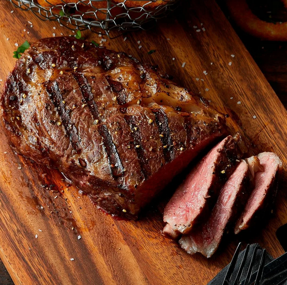
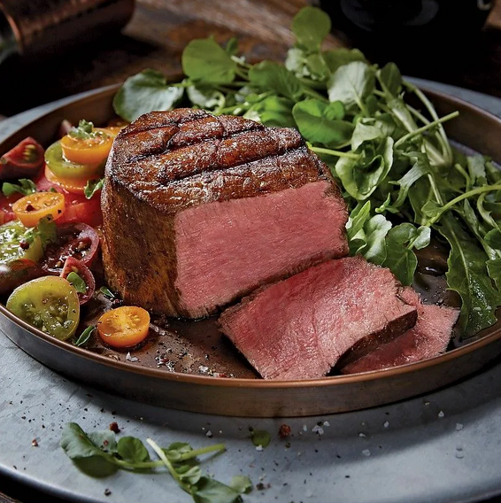
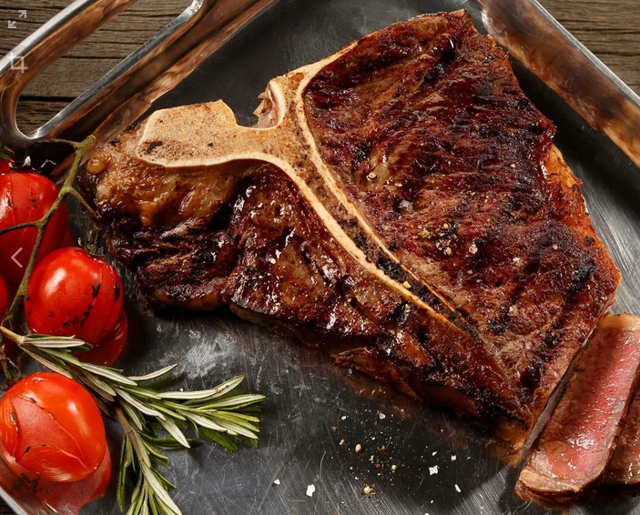
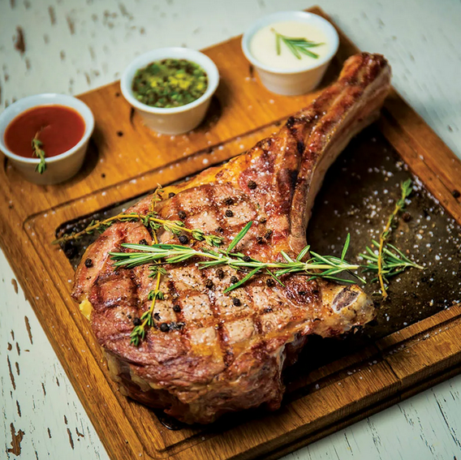

Steak Types

The rib eye is a boneless rib steak from the rib section

Filet mignon is a cut of meat taken from the center and butt thirds of beef tenderloin

The T-bone and potterhouse are steaks of beef cut from the short loin.

The Tomahawk steak is an on-the-bone rib steak, cut from the fore-tib with the entire rib bone left
A mighty porterhouse steak, an inch and a half thick, sizzling hot from the griddle, dusted with fragrant pepper, and enriched with melting bits of fresh butter. The precious juices of the meat trickle out, blending with the gravy, adorned with mushrooms, and complemented by tender, yellowish fat. The long white bone, which divides the sirloin from the tenderloin, remains proudly in place, showcasing this ample, mouth-watering cut of beef.
Call to action! It's time!
Order one of our products by clicking that button right over there!